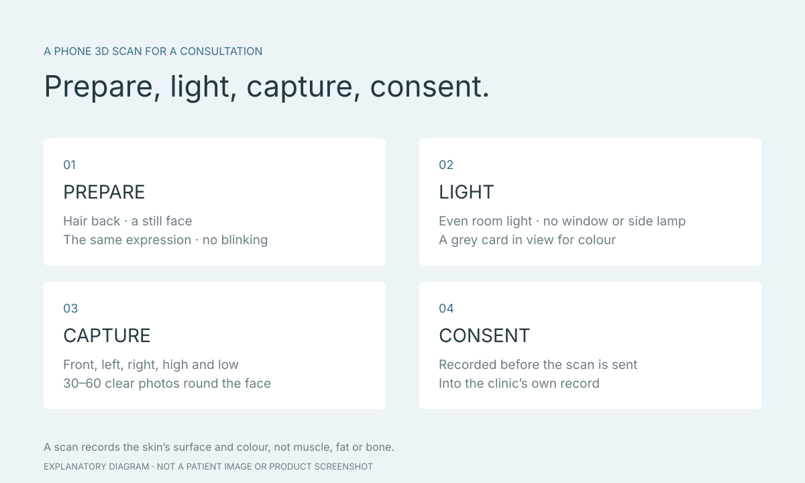

Phone 3D face scans for clinic consultations: capture, light, pose and privacy
A 3D face scan with a phone takes photographs of the face from dozens of angles and lets an app build them into a three-dimensional model you can turn around. Clinics use the model to explain facial shape and simulations during a consultation. This guide explains what a scan does and does not capture, how to prepare light and pose, and what to ask about consent and facial data, following the scan guide Faceliora Clinic gives clinics.

Key points
- A 3D scan records the shape and colour of the skin, not muscle, fat or bone.
- Scans to be compared should use the same method, light and expression.
- Ask about consent, access and how long the scan is kept before it is taken.
What a 3D scan captures, and what it does not
A phone scan records the outer shape of the skin and its colour as far as the camera sees it, so the face can be viewed from many angles and distances can be measured on the model. It does not see what lies beneath the skin, such as muscle, fat or bone. Areas covered by hair or out of the camera’s view may be missing, and one scan records a single expression, not movement while smiling or talking.
A single 2D photograph changes proportions with camera distance: Ward et al. (2018) showed that a short shooting distance changes the ratio of nose width to face width in the image. A 3D model does not depend on one view, but it has its own limits from lighting, movement and the app’s processing.

Reference:
How useful a phone scan is for comparison
Lobato et al., in 40 patients who had chin fat grafting, compared CT with models built from smartphone photographs (photogrammetry) before treatment and at 6 months. The absolute volumes from the two methods differed, but the change from before to after was not significantly different. Before-and-after comparison with the same method is useful; values from different methods should not be compared directly.
Pose and expression also change measurements. In an under-eye study, Honig et al. (2024) found that the direction of gaze changed the measured volume. Scans that will be compared should be taken the same way, in the same light, with the same expression.
Preparing the person and the room
Faceliora Clinic’s scan guide starts with the person being scanned: tie the hair back, clear of the forehead, ears and jawline; sit still, keep the same expression from start to finish, and do not blink during the scan, because movement makes the views disagree.
Room light should be even: close the curtains and switch off any lamp beside the person, so both sides of the face are lit alike. Clinics that use skin-colour analysis clip a grey card or ColorChecker flat on the chest below the collarbone, facing the camera for the whole scan, so colour can be read from the scan.
- Hair tied back, showing the forehead, ears and jawline
- A still face, the same expression, no blinking
- Even light, with no window or side lamp
- The grey card or ColorChecker in view for the whole scan
Scanning with an iPhone
Faceliora Clinic does not scan faces itself; it receives scans from the Faceliora Scan app for iPhone (App Store link pending). The person holding the phone keeps the iPhone in landscape and moves around the still face as the on-screen markers ask: front, left, right, high and low, until there are 30–60 clear photos, and checks the coverage before finishing.
Self-scan needs an iPhone with a TrueDepth front camera: hold the phone still and turn the head as the spoken directions ask. Building the 3D model on the phone depends on whether that iPhone supports it. A full count of photos does not guarantee every side is sharp, so review the photos before sending.
Reference:
- Faceliora Scan — App Store (pending)
- Faceliora Clinic: product scope
Consent and facial data
A face model identifies a person, so it is personal data under Thailand’s PDPA. In Faceliora Scan the person scanning chooses the patient and, if none is on record, confirms consent before sending; the app then sends the scan into the clinic’s record under that patient. The clinic’s system accepts phone scans only for patients with consent on record.
Before a scan, the person should know what it is for, who can access it, where it is kept and for how long, and how to ask for it to be deleted. Simulations in Faceliora Clinic are computed on the clinic’s computer and the model is not sent elsewhere to be processed; how long the record keeps a scan is the clinic’s policy, so ask the clinic directly.
- What is the scan used for, and will it be used for anything else?
- Who can access the scan?
- Where is it kept, and for how long?
- How can I see it, get a copy or ask for it to be deleted?
Reference:
Using the scan in a consultation
Once the scan is in the record, a physician opens the model in Faceliora Clinic to view the face from many angles and to simulate filler, botulinum toxin, fat grafting or facial contouring on the person’s own face. These pictures help both sides talk about the same thing.
A simulation is a picture for communication, not a guaranteed result. Whether a procedure is suitable, the amount and the risks must come from a physician’s examination and advice.
Sources
- Faceliora Scan — App Store (pending)
- Lobato et al. (2023): CT and smartphone photogrammetry after chin fat grafting — Aesthetic Surgery Journal
- Honig et al. (2024): 3D volume of tear-trough filler over time — Aesthetic Surgery Journal Open Forum
- Ward et al. (2018): Nasal Distortion in Short-Distance Photographs — JAMA Facial Plastic Surgery
- PDPA พ.ศ. 2562 / 2019 — English translation hosted by Thailand’s Department of Lands (PDF)
- Faceliora Clinic: product scope